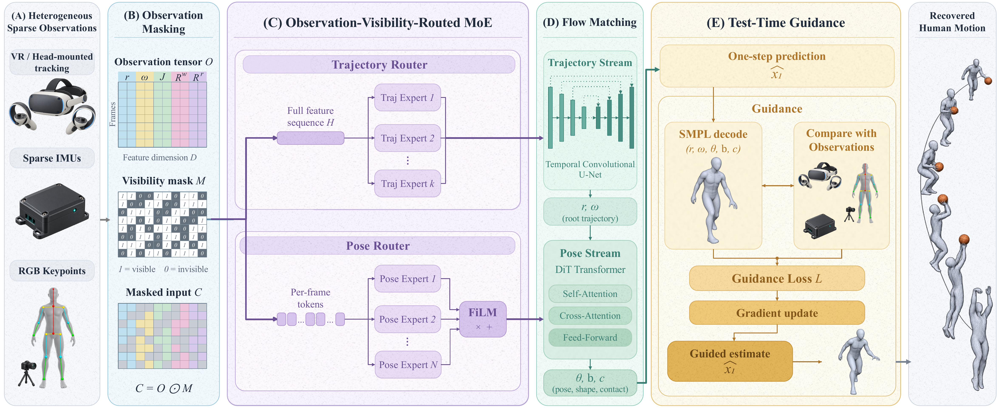
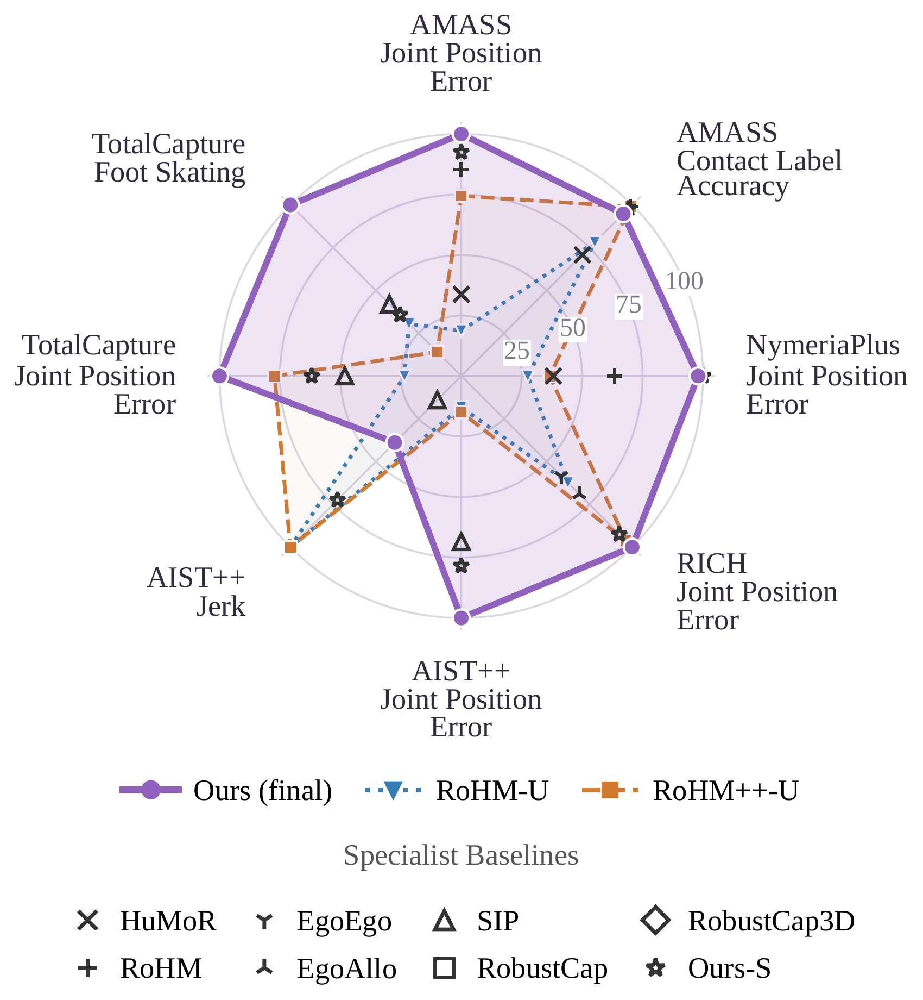
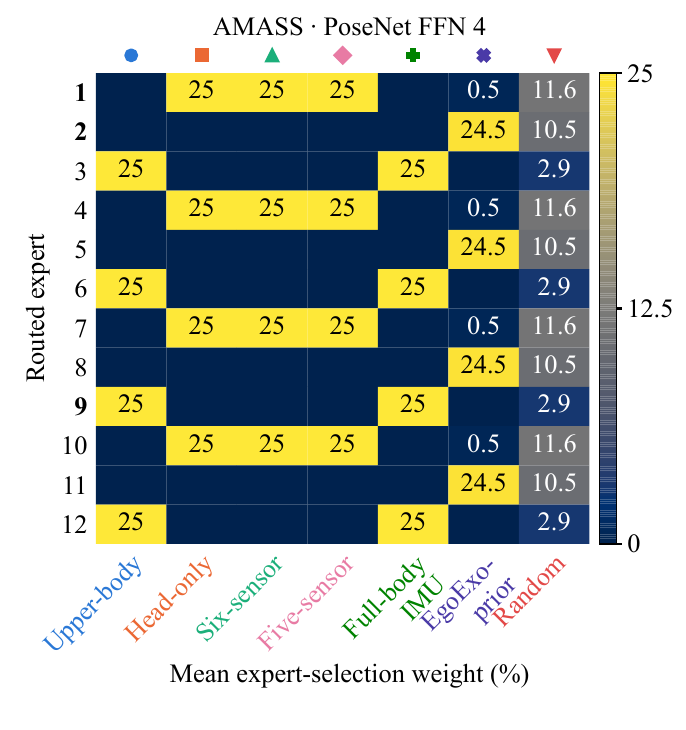
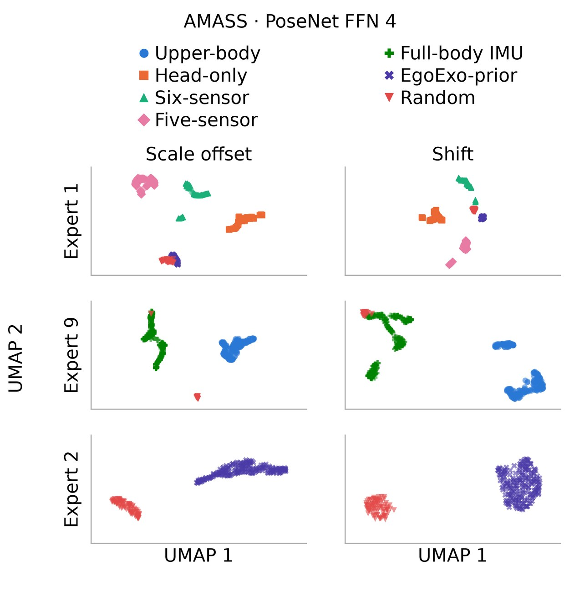

Recovering full-body 3D human motion from sparse observations is challenging due to sensor noise, occulusion, and different combinations of sensor signals. OmniPoser is a unified framework that recovers full-body motion from heterogeneous sparse observations, such as 3D joint positions, sparse IMU rotations, and head-mounted 6-DoF poses.
Built on conditional flow matching, OmniPoser uses a decoupled dual-stream backbone to separate the global trajectory from the body pose and recover full-body motion within a single step.
To handle varying observation patterns, OmniPoser uses an observation-visibility-routed Mixture-of-Experts (MoE) module that selects experts based on which body parts are observed. To achieve fast inference speed, test-time flow-matching guidance corrects predictions toward available measurements with a single gradient step.

The motion representation can include joint positions, joint rotations, root translation and orientation. Any subset of these terms may be available in a frame.
We concatenate these observations into a tensor . The binary visibility mask for is , indicating which entries are observed. For joint-based terms, visibility is specified per joint and frame; for global terms, it is specified per frame.
Applying the visibility mask gives the network's observation input:
Conditional flow matching learns to transform a randomly sampled noise into full-body motion conditioned on available measurements. The trajectory stream first recovers global translation and orientation. The pose stream then uses that trajectory to recover local joint rotations, body shape, and foot contact. We use single-step inference.
A router selects active experts from a shared pool using the visibility information, so related patterns can reuse the same expert subsets.
In addition to the routed experts, each routed module contains always-active shared experts, following DeepSeekMoE. The shared experts process every input and thus capture the computation paths shared across observation patterns, while the routed experts capture pattern-specific paths.
Routing chooses which experts to use; feature-wise linear modulation (FiLM) further adapts expert outputs by applying learned scales and shifts to their output features. FiLM is conditioned on the same observation-pattern information as the router.
Single-step flow-matching yields fast inference, but usually reduces prediction accuracy. Test-time flow-matching guidance updates the initial noise within one gradient step to correct the one-step predictions towards available sensor measurements.
The gradient step updates only the global trajectory and local joint rotation entries of . The body shape and foot contact source entries remain unchanged. The updated source gives the final guided prediction.
The figure shows eight metrics across five benchmarks, normalized to a 0–100 scale. Points farther outward indicates better performance. Colored lines denote unified models; black markers report specialist methods on certain metrics.

For a closer comparison, the chart below reports results across benchmarks and observation settings. Use it to examine the Dense, MoE, and final variants of OmniPoser and compare them with other unified and specialist methods.
Choose a benchmark and observation setting. The chart reports mean per-joint position error (MPJPE) in millimeters; lower is better.
Unified means that one model handles different observation patterns within a training domain; separate domains use separate checkpoints.
Ours-U (Dense) is dense unified model. Ours-U (MoE) introduces visibility-routed experts, and Ours-U (final) adds test-time flow-matching guidance to that model. RoHM-U uses the RoHM architecture and trains on the same observation patterns as Ours-U; RoHM++-U additionally uses setting-specific input encoders. Ours-S is trained for a specific observation setting. Rows without -U denote specialist models trained for individual settings.
On an NVIDIA A40 GPU, full model inference takes 3.0 ms per frame, corresponding to over 300 FPS.
| Step | Time per frame (ms) |
|---|---|
| Trajectory stream | 0.4 |
| Pose stream | 2.0 |
| Test-Time Flow-Matching Guidance | 0.6 |
| Full model | 3.0 |
Purple shows predictions; green shows ground truth.
Routing and FiLM have different roles. The matrix shows how observation patterns affect expert routing, with same subset of experts reused for different patterns. The FiLM visualizations show how learned modulation varies across patterns, allowing selected experts to further adapt their outputs.


The following ablations test the contributions of expert capacity and FiLM modulation. Unless otherwise stated, we use AMASS with the upper-body joint-position pattern.